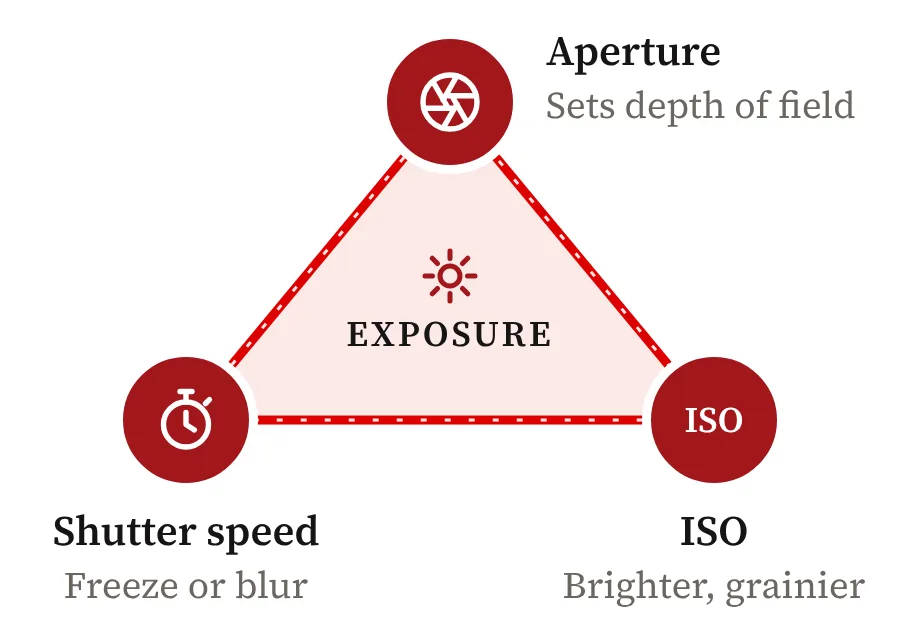
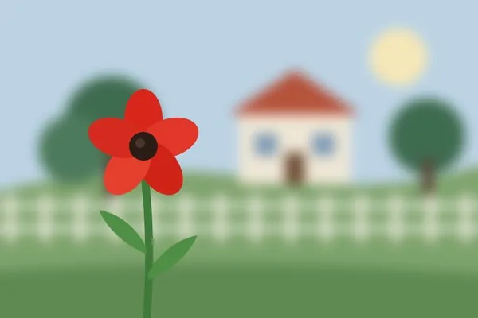
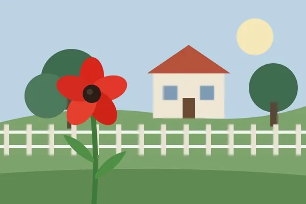
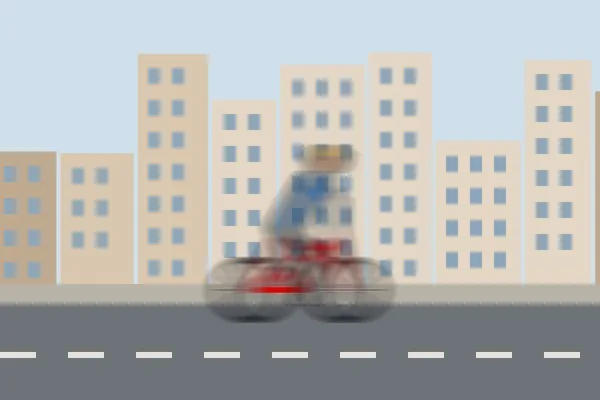
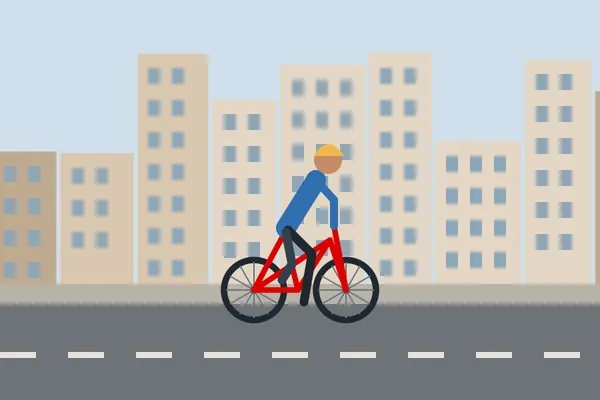
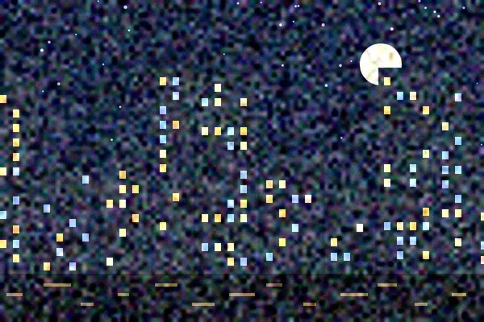
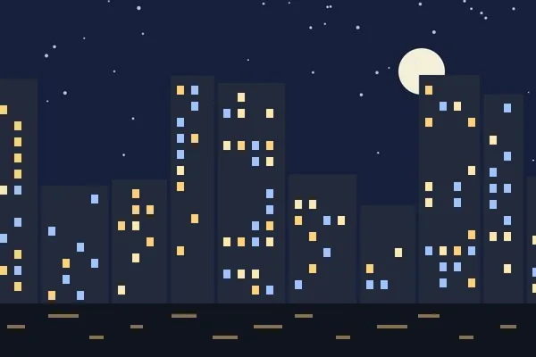

Every exposure comes down to the aperture, the shutter speed and the ISO. Together they decide how bright the picture is. But each one also changes the look. Aperture changes how much is sharp from front to back, shutter speed changes how motion looks, and ISO changes how much noise you get. Balancing them is what shooting in manual is all about.
Think of exposure as filling a glass under a tap. The aperture is how far you open the tap and the shutter speed is how long you let it run. ISO decides how full the glass has to be before it counts as full. At a higher ISO, less water will do. Open the tap wide for a moment or a little for longer and you collect the same amount, but the picture looks different.

Aperture. The opening in the lens. A wider opening lets in more light and blurs the background.
Shutter speed. How long the sensor collects light. Faster freezes motion, slower blurs it.
ISO. How much the signal is amplified. Higher brightens the picture and adds grain.
Stops, the common currency
Photographers measure light in stops. One stop means double or half the light. Open the aperture by one stop, or use a shutter speed twice as long, or double the ISO, and the picture gets one stop brighter. Because they all use the same unit you can trade one for another. Open the aperture a stop, make the shutter a stop faster, and the brightness stays exactly the same while the look changes.
Aperture


The aperture is the adjustable opening inside the lens. It’s described by an f-number, which is the focal length divided by the width of the opening. That’s why a smaller number means a bigger opening. The standard full stops are f/1.4, f/2, f/2.8, f/4, f/5.6, f/8, f/11, f/16 and f/22, and each one lets in half the light of the one before.
Aperture also controls depth of field, the zone from near to far that looks sharp. A wide aperture like f/1.8 gives shallow depth of field. The subject is sharp and the background melts away, which is lovely for portraits. A small aperture like f/11 keeps everything sharp from the foreground to the horizon, which suits landscapes. Most lenses are sharpest two or three stops down from their widest setting. At very small apertures such as f/22, an effect called diffraction softens everything slightly.
Shutter speed


Shutter speed is how long the sensor collects light. It’s written in seconds or fractions of a second, so 1/1000, 1/500, 1/250, 1/125, 1/60 and so on, each one twice as long as the one before.
Fast speeds freeze motion and slow speeds blur it. Roughly speaking, 1/500 s freezes people walking and cycling, and 1/1000 s or faster freezes sport and birds in flight. Anything slower than about 1/60 s risks blur from your own hands. Blur isn’t always bad. A slow shutter turns a waterfall to silk and car lights into streaks. If you follow a moving subject at around 1/30 s, it stays sharp against a streaky background. For hand-held shots, keep the shutter speed at least one over the focal length, so 1/50 s at 50 mm. Image stabilisation lets you go slower.
ISO


ISO sets how much the signal from the sensor gets amplified. Double it from 100 to 200 and the picture gets one stop brighter without touching the aperture or the shutter. The price is noise, those grainy speckles and blotches of colour that show up most in dark areas. The base ISO, usually 100, gives the cleanest result.
Modern cameras give very usable pictures at ISO 1600 to 6400, and noise reduction in editing helps a lot. So raise the ISO when you need a faster shutter or a smaller aperture than the light allows. Just raise it last. A sharp photo with some grain almost always beats a clean, blurry one.
Depth of field in more detail
Aperture isn’t the only thing that controls depth of field. Distance matters just as much. The closer you get to the subject, the thinner the zone of sharpness becomes, which is why close-ups of flowers can look soft even at f/8. A longer focal length makes the background look softer too. So does a bigger sensor at the same framing, and that’s why phones, with their tiny sensors, keep almost everything sharp.
When you want everything sharp in a landscape, focus about a third of the way into the scene instead of on the horizon. At f/8 to f/11 with a wide lens, that usually covers everything from a few metres in front of you to the far distance.
Every stop on one scale
| ← More light | Less light → | |||||||
|---|---|---|---|---|---|---|---|---|
| Aperture | f/1.4 | f/2 | f/2.8 | f/4 | f/5.6 | f/8 | f/11 | f/16 |
| Blurry background | Sharp throughout | |||||||
| Shutter | 1/8 | 1/15 | 1/30 | 1/60 | 1/125 | 1/250 | 1/500 | 1/1000 |
| Motion blur | Frozen motion | |||||||
| ISO | 12800 | 6400 | 3200 | 1600 | 800 | 400 | 200 | 100 |
| More grain | Clean | |||||||
Read the scale across. Every column lets in the same amount of light, so f/2.8 at 1/500 s, f/4 at 1/250 s and f/5.6 at 1/125 s all give the same exposure. So does f/4 at 1/500 s with the ISO doubled. Pick the combination whose look you want. A soft background or a sharp one. Frozen motion or flowing motion.
Exposure value
You’ll often see exposure written as EV, short for exposure value. One EV is the same as one stop. When the camera shows +1 EV, it means one stop more light than the meter wanted. EV is also used to describe how bright a scene is. A sunny beach sits around EV 15 at ISO 100, while a dim living room is closer to EV 5.
Let the camera help
You don’t have to set everything yourself. In aperture priority, often marked A or Av on the mode dial, you pick the aperture and the camera picks the shutter speed. Shutter priority, S or Tv, works the other way round. With auto ISO, many cameras let you set a minimum shutter speed, so the ISO only climbs when it has to. Manual mode, M, gives you full control, with the meter as a guide.
Where to start

Portrait
- Aperture
- f/2.8
- Shutter
- 1/250 s
- ISO
- 100
Soft background

Landscape
- Aperture
- f/8
- Shutter
- 1/125 s
- ISO
- 100
Sharp front to back
Action
- Aperture
- f/4
- Shutter
- 1/1000 s
- ISO
- 400
Freeze the moment

Concert
- Aperture
- f/2
- Shutter
- 1/125 s
- ISO
- 3200
Fast lens, high ISO
Show movement
- Aperture
- f/11
- Shutter
- 1/15 s
- ISO
- 100
Brace the camera
City at night
- Aperture
- f/8
- Shutter
- 10 s
- ISO
- 100
Tripod, no grain
Exercises
Exercises E1–E4. Tick each one off when you’ve tried it. Your ticks stay on this phone or computer.
- E1
Aperture
In aperture priority, photograph a subject a metre away with the background far behind. Shoot it at your widest aperture, then f/4, f/8 and f/16. Compare the backgrounds.
- E2
Shutter speed
In shutter priority, photograph moving water or a friend running at 1/1000, 1/125, 1/30 and 1/8 s. Compare how the motion looks.
- E3
ISO
In a dim room, take the same picture at ISO 100 on a tripod and at ISO 3200 or 6400 hand-held. Zoom in and compare the noise.
- E4
Trade stops
In manual mode, find a correct exposure. Then make more pictures of the same brightness using other combinations from the stop scale, and describe how each one looks.
Photography Handbook, © 2026 Samskara Photo Club. Text and illustrations are licensed under CC BY-NC-SA 4.0. You may share and adapt them for non-commercial use if you credit the club and share your version under the same licence. Commercial use needs the club’s permission. The club logo is not covered by the licence.